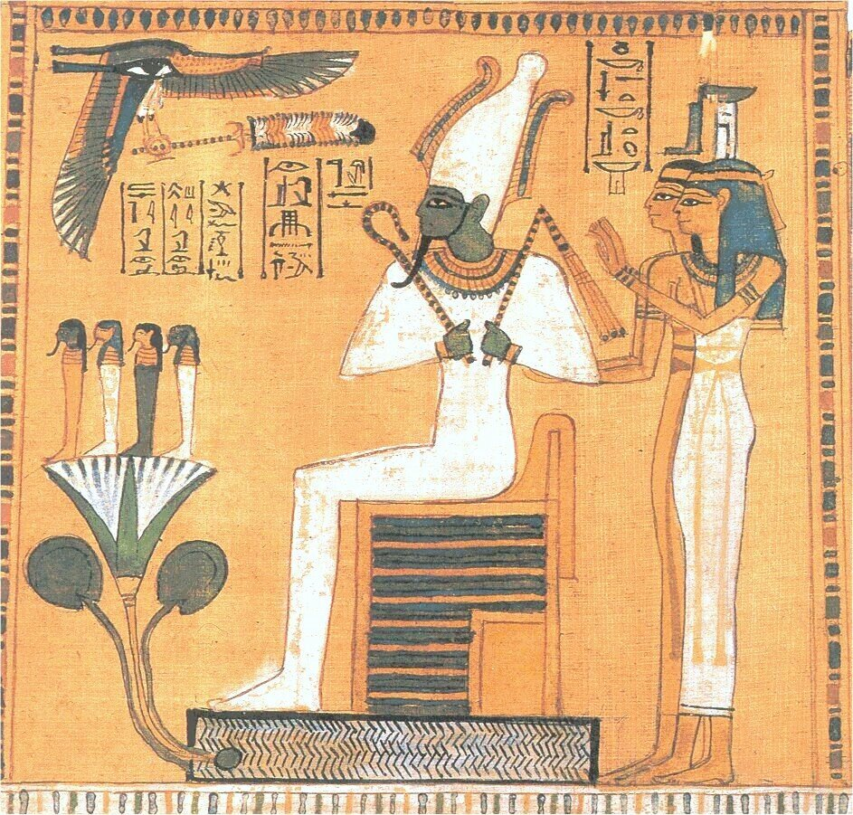

A Lenda de Osíris
Prefácio
Osíris era um dos principais deuses do Egito, associado à vida, morte, e ressurreição. Como rei dos deuses, ele governava com justiça e benevolência, trazendo civilização, leis e a prática da agricultura para o Egito. Seu reinado era próspero e pacífico, o que gerava inveja em seu irmão Set, o deus do caos, desertos e tempestades.
Set, desejando tomar o trono de Osíris, planejou sua morte. Ele convidou Osíris para um banquete e apresentou um caixão lindamente decorado, prometendo que o daria a quem coubesse perfeitamente nele. Quando Osíris deitou-se no caixão, Set e seus seguidores fecharam a tampa, selaram-na com chumbo e jogaram o caixão no Rio Nilo.
O caixão foi levado pelo Nilo até a cidade de Byblos, onde ficou preso em uma tamargueira. Ísis, a esposa e irmã de Osíris, partiu em uma jornada incansável para encontrar seu marido. Ela descobriu o caixão dentro do tronco da árvore, que havia sido usado como uma coluna no palácio do rei de Byblos. Ísis conseguiu recuperar o corpo de Osíris e o levou de volta ao Egito.
Set encontrou o corpo de Osíris novamente e, enfurecido, cortou-o em quatorze pedaços, espalhando-os pelo Egito. Ísis, com a ajuda de sua irmã Néftis, recolheu todas as partes do corpo, exceto uma, o falo, que foi devorado por um peixe do Nilo. Ísis usou seus poderes mágicos para reconstruir o corpo de Osíris, criando um novo falo de ouro.
Com a ajuda de Anúbis, o deus da mumificação, Ísis realizou os primeiros rituais de embalsamamento, revivendo Osíris. No entanto, ele não retornou à vida na Terra, mas tornou-se o deus do submundo, governando o reino dos mortos e servindo como juiz das almas.
Significado Simbólico
• Vida, Morte e Ressurreição: A história de Osíris simboliza o ciclo eterno da vida, morte e renascimento. Osíris é frequentemente associado à vegetação, que morre no inverno e renasce na primavera. Isso representa a crença egípcia na vida após a morte e na ressurreição.
• Ordem vs. Caos: A luta entre Osíris e Set simboliza a batalha entre a ordem (maat) e o caos (isfet). Osíris, como rei justo e benevolente, representa a ordem e a civilização, enquanto Set representa o caos e a destruição. O triunfo final de Osíris sobre Set simboliza a vitória da ordem sobre o caos.
• Poder do Amor e da Lealdade: A devoção de Ísis a Osíris e sua busca incansável para encontrar e ressuscitar seu marido simbolizam o poder do amor e da lealdade. Ísis é frequentemente vista como a personificação da dedicação e da maternidade.
• Justiça e Julgamento: Como deus do submundo, Osíris se torna o juiz dos mortos, simbolizando a justiça e o julgamento final. Os mortos são julgados por suas ações em vida, refletindo a importância da moralidade e do comportamento ético.
• Rituais de Mumificação: A lenda de Osíris também está intimamente ligada aos rituais de mumificação. A prática de preservar o corpo para a vida após a morte é central na religião egípcia, e Osíris é frequentemente visto como o protetor dos mortos e guia para a vida eterna.
Personagens Significativos
• Ísis: Esposa e irmã de Osíris, Ísis é a deusa da magia, maternidade e fertilidade. Sua devoção incansável a Osíris e sua habilidade em usar magia para ressuscitá-lo destacam seu papel central na lenda. Ísis também protege seu filho Hórus e o prepara para vingar a morte de seu pai.
• Set: Irmão de Osíris e deus do caos, desertos e tempestades, Set é o antagonista principal na lenda. Sua inveja e ambição o levam a assassinar Osíris e a disputar o trono do Egito com Hórus. Set representa a força destrutiva do caos que está sempre em oposição à ordem.
• Néftis: Irmã de Osíris e Ísis, e esposa de Set, Néftis é uma deusa da morte e do luto. Ela se alia a Ísis para encontrar e ressuscitar Osíris, e também ajuda a proteger e cuidar de Hórus. Néftis simboliza a proteção e a assistência espiritual na vida após a morte.
• Hórus: Hórus, filho de Osíris e Ísis, também desempenha um papel significativo na lenda. Ele foi concebido de maneira milagrosa após a ressurreição de Osíris. Hórus eventualmente cresceu e vingou a morte de seu pai, derrotando Set e restaurando a ordem no Egito.
• Anúbis: Deus da mumificação e guardião das tumbas, Anúbis desempenha um papel crucial na ressurreição de Osíris. Ele embalsama o corpo de Osíris e garante sua passagem segura para o submundo, simbolizando a importância dos rituais funerários e da preservação do corpo.
• Thoth: Deus da sabedoria, magia e escrita, Thoth ajuda Ísis e Néftis na ressurreição de Osíris, utilizando sua vasta sabedoria e poder mágico. Ele também atua como mediador durante os julgamentos no submundo, assegurando a justiça divina.
Reflexão
A lenda de Osíris não é apenas uma narrativa mitológica, mas uma profunda alegoria religiosa e filosófica que encapsula as crenças fundamentais dos antigos egípcios sobre a vida, a morte e a ordem cósmica. Através de sua história, eles expressavam a esperança na vida após a morte, a importância da justiça e a eterna batalha entre a ordem e o caos. Osíris continua a ser um símbolo poderoso de renascimento e renovação, um testemunho duradouro do poder da ordem, da justiça e do amor eterno.